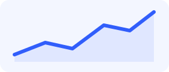

УЧЕБНАЯ ПАНЕЛЬ • ПРАКТИЧЕСКАЯ № 3
Все процессы — под контролем
Следите за показателями, новыми действиями и задачами проекта. Bootstrap отвечает за компоненты, а JavaScript — за данные и действия.

Показатели
Данные из dashboard.json
Загружаем показатели...
Последние действия
Журнал учебного проекта
| Действие | Раздел | Статус | Дата |
|---|---|---|---|
| Загрузка... | |||
Ближайшие задачи
Отмечайте выполненные задачи
Выполнение задач
0%
Демонстрационные значения: исходный архив dataset к заданию не был приложен. Замените JSON на выданный преподавателем, сохранив структуру полей или адаптировав app.js.